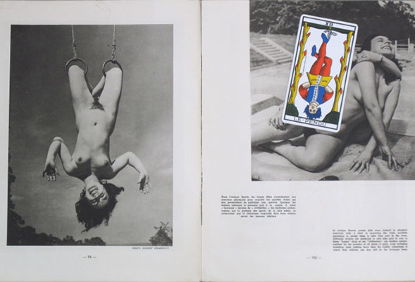

Hanged Man
Year
2010
Materials
Collage
Dimension
31 x 48 cm
Description
This collage works as a kind of exegetic reminder. The 1952 naturist review Vivre plus is one of the artist's prized possessions among her widely varied collection of objects found on the internet. This purchase, as well as the double-page spread presentation, adds a certain complexity to the film's upside-down men.
